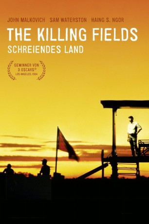

#582 Killing Fields - Schreiendes Land
Alternativ: The Killing Fields
Auszeichnungen: 3 Oscars gewonnen für 4 Oscars nominiert 1 GoldenGlobes gewonnen 8 BAFTA-Awards gewonnen
 
 IMDB-Wertung: 7.9 / 10
IMDB-Wertung: 7.9 / 10  Metascore: 0
Metascore: 0 
Der amerikanische Reporter Sydney Schanberg berichtet für die "New York Times" aus Kambodscha über den Krieg im benachbarten Vietnam. Der einheimische Dolmetscher Dith Pranh ist ihm nicht nur ein unentbehrlicher Helfer, sondern inzwischen auch ein guter Freund geworden. Als sich die Amerikaner 1975 überstürzt zurückziehen und die Roten Khmer die Macht übernehmen, versuchen sie verzweifelt, das Land zu verlassen. Zwar können sie sich aus der Gewalt der Rebellen befreien und in die französische Botschaft flüchten, doch nur Schanberg darf ausreisen. Pran muss zurückbleiben und wird in eins der gefürchteten Reisfeld-KZs verschleppt ...
Jahr: 1984
Dauer: 141 Minuten
FSK: 16
Land: England Studio: Warner-Columbia FilmverleihTonspuren: DTS - ,
Untertitel: Deutsch,
Auflösung: 1080p (1920x1040) Größe: 12288 MB
Genre: Biographie, Drama, Geschichte, Krieg
Regisseur: Roland Joffé
Drehbuch: Bruce Robinson
Soundtrack: Mike Oldfield
Darsteller:
 Sam Waterston als Sydney Schanberg
Sam Waterston als Sydney Schanberg- Haing S. Ngor als Dith Pran
 John Malkovich als Al Rockoff
John Malkovich als Al Rockoff Julian Sands als Jon Swain
Julian Sands als Jon Swain Craig T. Nelson als Military Attaché
Craig T. Nelson als Military Attaché Spalding Gray als U.S. Consul
Spalding Gray als U.S. Consul- Bill Paterson als Dr. MacEntire
 Patrick Malahide als Morgan
Patrick Malahide als Morgan- Nell Campbell als Beth
- Joanna Merlin als Schanberg's Sister
- Athol Fugard als Dr. Sundesval
- Graham Kennedy als Dougal
- Katherine Krapum Chey als Ser Moeum, Pran's Wife
- Oliver Pierpaoli als Titony, Pran's Son
- Edward Entero Chey als Sarun
- Tom Bird als U.S. Military Advisor
- Monirak Sisowath als Phat, K.R. Leader 2nd Village
- Lambool Dtangpaibool als Phat's Son
- Ira Wheeler als Ambassador Wade
- David Henry als France
- Joan Harris als TV Interviewer
- Jay Barney als Schanberg's Father
- Mark Long als Noaks
- Sayo Inaba als Mrs. Noaks
- Mow Leng als Sirik Matak
- Chinsaure Sar als Arresting Officer
- Hout Ming Tran als K.R. Cadre-First Village
- Thach Suon als Sahn
- Neevy Pal als Rosa
Datei: X:\1984\Killing Fields - Schreiendes Land (1984, FSK16, 1920x1040).mkv seit 11.03.2015
Festplatte: HD 1980-1986
 Es gibt insgesamt 46 Filme in der Gruppe '1984'
Es gibt insgesamt 46 Filme in der Gruppe '1984'